BônusRitual da Hora de Dormir
Os 3 passos para trocar a tela por uma história, do jeito que funciona com criança pequena:
- Apague a luz grande.
- Aperte o play e deite junto.
- Faça a pergunta da noite.
12 histórias da Bíblia, narradas e ilustradas, para ouvir juntinho no celular. Cerca de 3 minutos cada, sem propaganda e sem um vídeo puxando o outro.
Pagamento único, por Pix ou cartão. O acesso chega na hora, no seu e-mail.
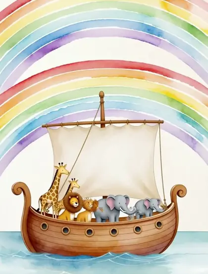
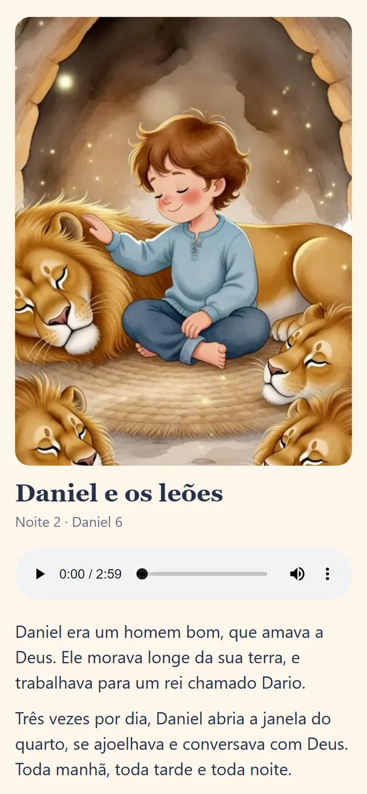
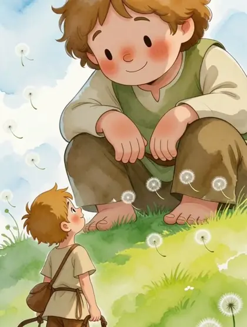
A tela foi feita para não acabar nunca. Termina um vídeo, começa outro, e o próximo é escolhido por uma máquina. É assim que a hora de dormir vira briga.
Qualquer pai ou mãe cansado faria igual. Só que esses minutos antes de dormir passam rápido, e não voltam.
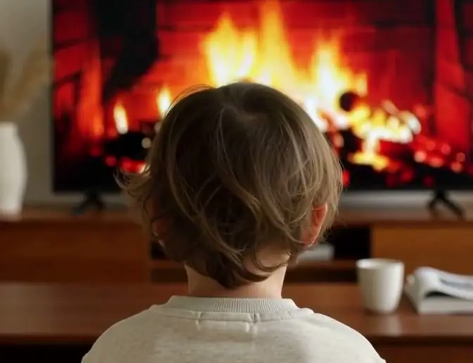
O Historinha da Noite troca o último desenho por uma história da Bíblia, curta, narrada e ilustrada, que termina sozinha. Sem nada puxando a criança para a próxima tela.
| O que conta | YouTube | Desenho | Historinha |
|---|---|---|---|
| Sem propaganda | ✕ | ✓ | ✓ |
| Não puxa outro vídeo | ✕ | ✕ | ✓ |
| Ensina a Palavra | ✕ | ✕ | ✓ |
| Termina com conversa | ✕ | ✕ | ✓ |
Porque ninguém contou do jeito que ela entende. É isso que muda quando a noite troca de dono:
A história termina sozinha. Sem o "só mais um", sem a briga, sem o próximo vídeo. Fica mais fácil apagar a luz.
Davi, Daniel, Ester, Noé, Moisés e Jesus, contados em linguagem de criança, com uma ilustração para ver enquanto ouve.
Em vez da tela, é você do lado dela, conversando sobre o que Deus fez. É desses momentos que ela vai lembrar.
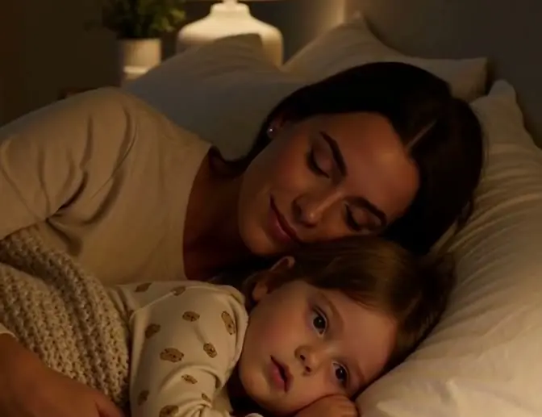
Todas narradas e ilustradas, com a pergunta da noite no final. Abrem no celular, sem instalar nada.
Davi e o gigante1 Samuel 17
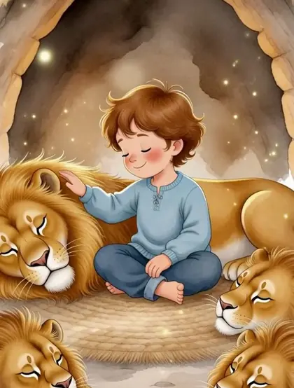
Daniel e os leõesDaniel 6
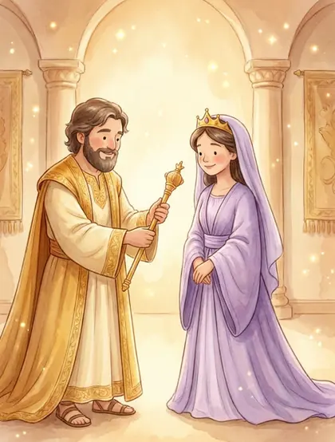
A rainha EsterEster 2 a 8
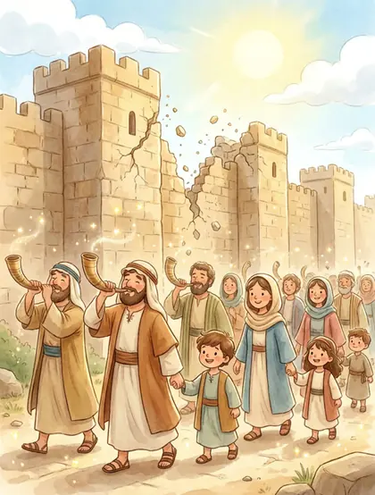
As muralhas de JericóJosué 6
A arca de NoéGênesis 6 a 9
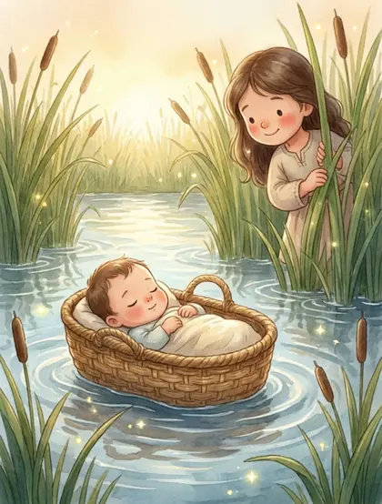
Moisés no cestinhoÊxodo 2
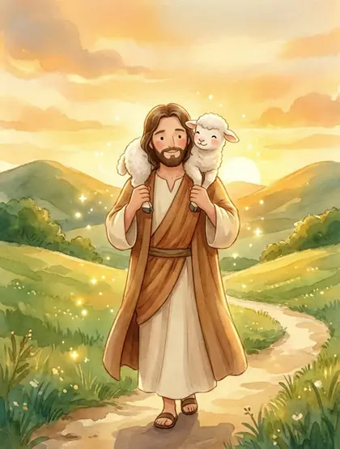
A ovelha perdidaLucas 15
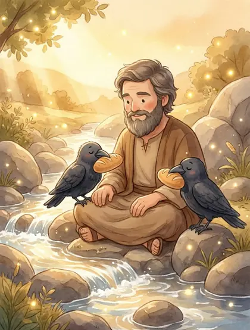
Elias e os corvos1 Reis 17
O nascimento de JesusLucas 2
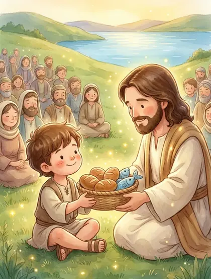
O menino dos pães e peixesJoão 6
Jesus acalma a tempestadeMarcos 4
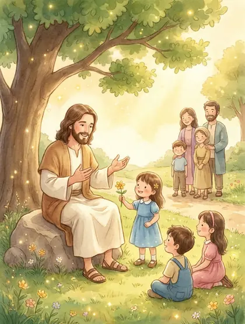
Jesus e as criançasMarcos 10
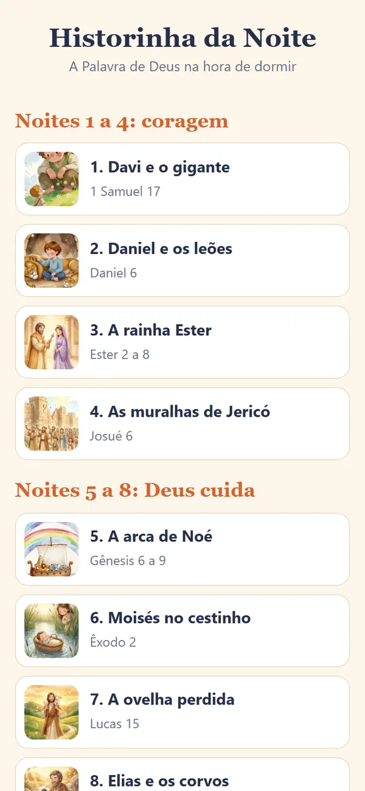
Os 3 passos para trocar a tela por uma história, do jeito que funciona com criança pequena:
Uma pergunta simples no fim de cada história, para conversar antes de dormir. Por exemplo: "Qual é o gigante que às vezes dá medo em você?"
Uma ilustração em estilo aquarela para cada história, para a criança acompanhar com os olhos enquanto ouve.
É a narração de verdade de "Daniel e os leões", a segunda noite. Coloque o som e escute o primeiro minuto.
Noite 2, Daniel 6. História completa: 2 min 59 s
A pergunta da noiteSobre o que você quer conversar com Deus hoje?
"Daniel era um homem bom, que amava a Deus. Ele morava longe da sua terra, e trabalhava para um rei chamado Dario.
Três vezes por dia, Daniel abria a janela do quarto, se ajoelhava e conversava com Deus. Toda manhã, toda tarde e toda noite."
As 12 histórias seguem o mesmo jeito: frases curtas, voz calma e um final que deixa a criança pensando, e não pedindo outra tela.
A diferença está nos últimos minutos do dia.
Se você acha que o YouTube dá conta de ensinar sobre Deus, não compre.
Mas se você quer ser quem conta essas histórias para a sua criança, é aqui que começa.
Sem mensalidade e sem cobrança escondida. Você paga uma vez e as histórias ficam com você.
Você paga uma vezR$ 37
12 histórias narradas e ilustradas + a pergunta da noite + Ritual da Hora de Dormir
R$ 37Pagamento único. Pouco mais de três reais por história.
Quero as histórias por R$ 37Pix com aprovação na hora ou cartão de crédito. O acesso chega no seu e-mail logo depois.
Compra em ambiente seguro, processada pela Wiapy.
Esta condição vale até a data definida.
Ouça as histórias por até 30 dias. Se achar que não valeu a pena, peça o reembolso e devolvemos 100% do valor pago. Sem pergunta e sem burocracia.
Foi escrito para crianças de 3 a 9 anos. Os menores ouvem pela voz e pela ilustração; os maiores já conversam sobre a pergunta da noite.
Cerca de 3 minutos. A mais curta tem 2 minutos e 52 segundos e a mais longa, 3 minutos e 15 segundos.
Não. É uma história de cada vez, e ela termina sozinha, sem nenhum vídeo depois.
Sim. São histórias da Bíblia recontadas em linguagem de criança, sem puxar para nenhuma igreja.
Sim, para tocar o áudio. As histórias abrem no navegador do celular, sem instalar aplicativo.
Logo depois do pagamento chega um e-mail com o link das histórias. No Pix, a aprovação é na hora.
Não. Você paga R$ 37 uma vez só.
Você tem 30 dias a partir da compra. Se não gostar, manda um e-mail para rmsolucoesdigitais2027@gmail.com e recebe todo o valor de volta.
12 histórias, uma pergunta por noite e 30 dias de garantia para decidir.
Pix ou cartão. Acesso na hora, no seu e-mail.